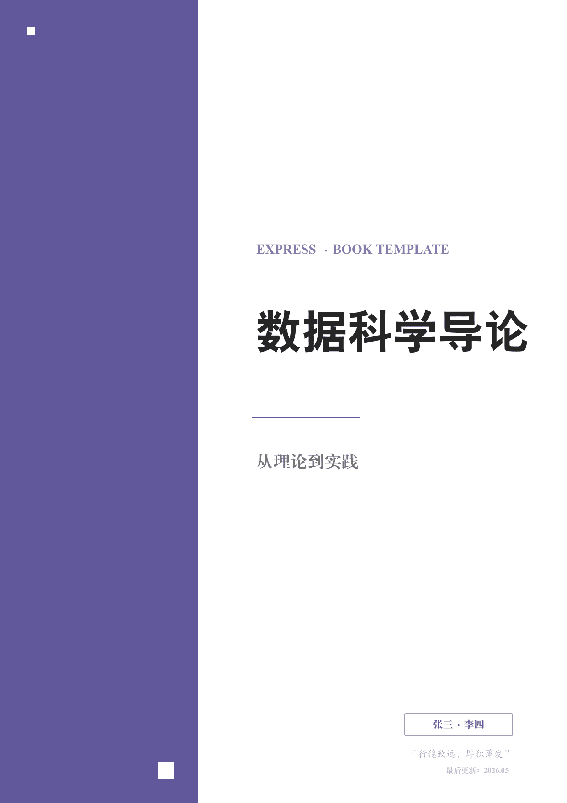
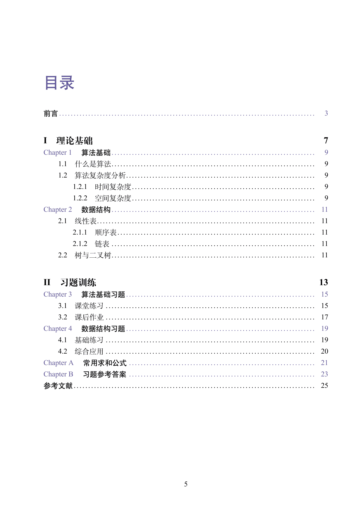
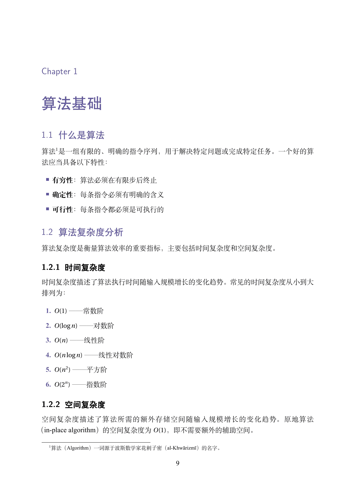

ExPress — 书籍排版
面向资料书、专著、笔记等书籍场景的 LaTeX 文档类。基于 book 基类，提供完整的篇章结构和专业排版。



功能特点
- 现代极简封面：左侧 38% 宽主题色竖条 + 右侧稿纸区，配色随 12 种主题色自动切换。支持叠加封面图片（可选）
- 完整书籍结构：篇（
\part）、章（\chapter）、节（\section）、子节（\subsection）四级层次，book基类原生支持 - 前言 / 附录 / 参考文献：
preface、appendices、references三个环境，开箱即用 - 页眉章节名随动：
showmark选项开启后，偶数页自动显示章名，奇数页显示节名 - 完整习题系统：完全兼容 ExBook 的
qitems、bbox、choices、analysis、subqitems等全部命令 - 边注系统：
\mynote{文字}命令，通过marginnotes选项或\marginnotetoggle{on/off}控制。关闭时自动回退为脚注 - 图/表按章编号：题注标签使用主题色，格式 "Fig 2.1"
- 12 种颜色主题：与 ExBook 相同的 4 经典 + 8 MBTI 色系
- 深色模式：全局
darkmode选项 - A4 / B5 纸张：文档类选项一键切换，封面和边距自动适配
- TikZ 列表样式：无序列表用主题色方块/圆环/短线，有序列表用主题色编号
- 外部配置：
config.tex管理封面、颜色、水印等全部设置
快速开始
文档类选项
| 选项 | 默认 | 说明 |
|---|---|---|
a4paper / b5paper |
a4paper | 纸张尺寸 |
adobe / ubuntu / mac / windows / fandol |
fandol | 中文字体集 |
printmode |
false | 双面打印 + 装订边距 |
online |
false | 封面显示勘误链接 |
water |
false | 每页水印 |
darkmode |
false | 深色模式 |
notocnum |
false | 隐藏章节编号 |
showmark |
false | 页眉自动显示章节名 |
analysis |
false | 全局显示习题解析 |
marginnotes |
false | 启用边注 |
配置
所有配置在 config.tex 中完成。
封面
\CoverImg{} % 留空使用纯色块
\PreTitle{EXPRESS · BOOK TEMPLATE}
\Title{数据科学导论}
\Subtitle{从理论到实践}
\Author{张三 · 李四}
\Motto{行稳致远，厚积薄发}
\UpdateTime{2026.05}
主题颜色
其他
\setSolutionDisplay{\hideSolution} % 答案显示
\marginnotetoggle{off} % 边注开关
\TextWater{[水印文字]} % 文字水印
\WaterImg{img/water.png} % 图片水印
书籍结构
\begin{preface} % 前言（无编号章节）
...
\end{preface}
\part{第一部分} % 篇
\chapter{第一章} % 章
\section{第一节} % 节
\subsection{第一小节} % 子节
\begin{appendices} % 附录（章号 A, B, C...）
\chapter{补充证明}
\end{appendices}
\begin{references} % 参考文献
\bibitem{ref1} ...
\end{references}
习题系统
与 ExBook 完全兼容。
\begin{qitems}[showanalysis, prefix=（, suffix=）]
\begin{bbox}
\qitem 题目内容
\fourchoices{A}{B}{C}{D}
\begin{analysis}
解析内容
\end{analysis}
\end{bbox}
\end{qitems}
所有 ExBook 的选择题命令（\threechoices ~ \sixchoices）、小问环境（subqitems）、解析环境（analysis）、解答环境（solution）均可用。
工具命令
| 命令 | 说明 |
|---|---|
\imgin[缩放]{对齐}{路径} |
插入图片 |
\autotilte[对齐]{标题}{副标题} |
自由标题 |
\blankbox / \eblankbox |
中文/英文空括号 |
\blankline |
空白下划线 |
\textwater |
渲染水印文字 |
\mynote{内容} |
边注（开启时页面外侧，关闭时脚注） |
\qanswerloc{页码} |
答案位置指示 |
\noreftitle{标题} |
无索引标题 |
\hideheaderfooter |
隐藏当前页页眉页脚 |
代码高亮
图/表题注
图/表按章自动编号，标签使用主题色：